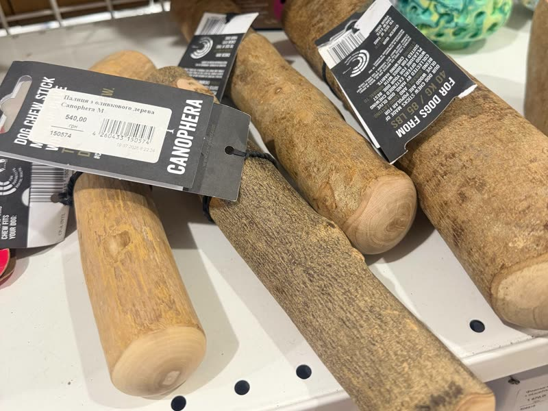

Пошукові ігри,гризунці й лизалки
Усі ці іграшки потрібні для одного: заспокоїти собаку й переключити її увагу. Собака заспокоюється, коли гризе, вилизує чи винюхує.

Пробуйте різні варіанти й дивіться, що заспокоює саме вашу собаку.
Безпека
- !Усі іграшки давайте тільки під наглядом.
- 1Найбезпечніше — картон і папір. У них немає пластику, який часто є в магазинних іграшках, і ними не можна подавитися, як, наприклад, паличками з магазину.
- 2Але не для всіх. Деякі собаки ковтають забагато паперу чи картону. Таким собакам цей варіант не підходить.
- 3Розмір іграшки з магазину уточнюйте в продавця. Замала іграшка — ризик задухи. Завелика буде незручною й нецікавою для собаки.
Пошукові ігри з того, що є вдома
Для всіх ігор потрібні картон, папір або тканина і улюблені ласощі собаки.
Тубус від туалетного паперу
Кладемо ласощі всередину й загинаємо краї. Собака розриває тубус і дістає смаколик.
Тубус від паперових рушників
Те саме, але тубус довший і ласощів більше. Гра триває довше.
Коробка з-під яєць
Розкладаємо ласощі по лунках і закриваємо коробку. Собака відкриває її носом і лапами.
Коробка з папірцями
Наповнюємо коробку зім’ятим папером і ховаємо ласощі між папірцями.
Кошик з ганчірками
Ховаємо ласощі між шматками тканини в кошику. Собака винюхує й розкопує.
Пошук по квартирі
Ховаємо ласощі в іграшку-сортер, у кошик і по кімнатах. Собака обшукує квартиру й відкриває іграшку.
Пошукові килимки
Киньте жменьку їжі в килимок.
Нюхання розслабляє собаку, переключає увагу й зменшує збудження.
Погризушки
Картонна коробка
Туалетний папір, серветки, паперові рушники
Без запаху.
Тубуси від паперових рушників
Палички з обробленої деревини
Мають різний розмір і твердість. Наприклад, паличка з оливкового дерева DoggoChew.
Подивитись у магазиніПалички з оливкового дерева Canophera
Бувають різних розмірів, шукайте в зоомагазинах.

Штучні палички Petstages
Подивитись у магазиніІграшки для ласощів
Конггризе + вилизує
Буває різних розмірів і твердості. Підходить і для вилизування ласощів, і для корму.
Подивитись у магазині